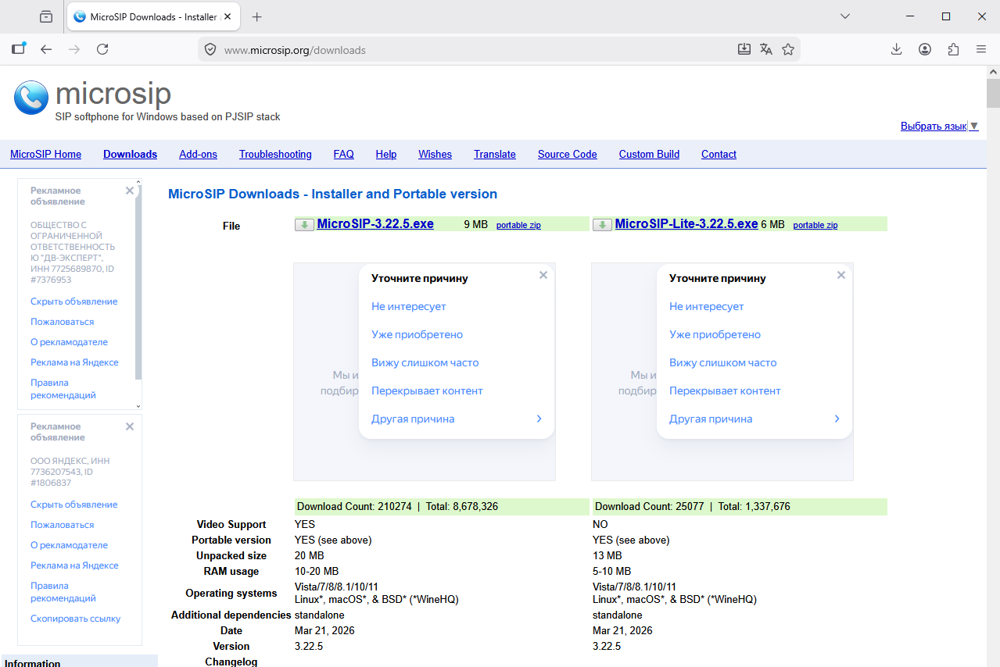
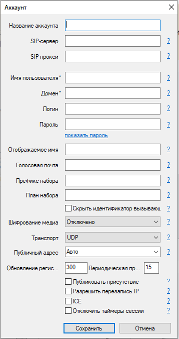

🔊 Настройка MicroSIP для работы с CRM
MicroSIP — это бесплатный легковесный SIP-клиент для Windows, который позволяет совершать звонки через IP-телефонию. My-Business CRM поддерживает интеграцию с MicroSIP — при нажатии на номер телефона в карточке клиента звонок будет совершаться автоматически.
📌 Альтернатива: Если у вас есть учётная запись Mango Office, рекомендуем использовать Mango Talker — он проще в настройке. MicroSIP подойдёт для любых SIP-операторов.
✅ Функция звонков доступна бесплатно! Для использования MicroSIP не требуется приобретать лицензию CRM. Нужна только подписка на SIP-телефонию у оператора связи.
📥 1. Скачивание и установка MicroSIP
1 Скачайте MicroSIP
- Перейдите на официальный сайт microsip.org
- Скачайте последнюю версию (файл MicroSIP.exe, около 200 КБ)
- Программа не требует установки — это портативный файл

Нажмите на кнопку "Download"2 Запустите MicroSIP
- Запустите скачанный файл MicroSIP.exe
- При первом запуске откроется окно настроек аккаунта
- Программа появится в системном трее (возле часов)
⚙️ 2. Настройка SIP-аккаунта
📞 Где взять данные для настройки?
Данные для подключения (SIP-сервер, логин, пароль) предоставляет ваш оператор IP-телефонии. Это может быть Mango Office, Zadarma, MTT, SIPNET, Comtube и другие.
Данные для подключения (SIP-сервер, логин, пароль) предоставляет ваш оператор IP-телефонии. Это может быть Mango Office, Zadarma, MTT, SIPNET, Comtube и другие.
3 Откройте настройки аккаунта
- Кликните правой кнопкой мыши на иконке MicroSIP в трее
- Выберите пункт Account (или "Настройки")
- Откроется окно с полями для ввода SIP-данных

Поля: SIP Server, Username, Password, Display Name4 Введите данные SIP-аккаунта
- SIP Server (или Domain) — адрес SIP-сервера (например:
sip.mango-office.ru) - Username (или Login) — ваш SIP-логин (обычно номер телефона)
- Password — пароль для авторизации
- Display Name — ваше имя (как будет отображаться у собеседника)
Пример заполнения для Mango Office:
SIP Server: 212.22.88.123
Username: 74951234567
Password: ваш пароль
SIP Server: 212.22.88.123
Username: 74951234567
Password: ваш пароль
✅ После заполнения нажмите "OK" — если данные верны, MicroSIP подключится к серверу и будет готов к звонкам.
🎧 3. Проверка подключения
5 Проверьте статус подключения
- Иконка в трее должна стать зелёной (или показывать "Ready")
- Наведите курсор на иконку — появится статус "Ready" или "Registered"
- Если статус красный или "Failed" — проверьте правильность введённых данных
💡 Для проверки можно позвонить на тестовый номер:
Введите
Введите
100 или 123 — некоторые операторы предоставляют голосовое меню для теста.
🔗 4. Интеграция с My-Business CRM
📌 Важно! My-Business CRM автоматически обнаруживает установленный SIP-клиент. Для работы с MicroSIP не требуется дополнительных настроек в CRM.
6 Настройте звонки в CRM
- На стороне My-Business CRM, ни каких действий не требуется.
7 Совершите тестовый звонок
- Откройте карточку любого клиента
- Нажмите на иконку телефона 📞 рядом с номером
- MicroSIP должен автоматически открыться и начать набор номера
✅ Готово! Звонки из CRM работают. При необходимости настройте гарнитуру и микрофон в MicroSIP.
🔧 5. Дополнительные настройки MicroSIP
Настройка звука
- Правой кнопкой мыши на иконке → Audio Devices
- Выберите микрофон и динамики (наушники)
- Настройте громкость и тестовый звонок
Настройка кодека
- Правой кнопкой мыши на иконке → Settings → Codecs
- Рекомендуется оставить PCMA, PCMU, G.722
- Вышестоящие кодеки дают лучшее качество
Настройка автозапуска
- Правой кнопкой мыши на иконке → Settings → General
- Поставьте галочку Run on Windows startup
- Микрофон → включите "Open on startup" для быстрого доступа
⚠️ Возможные проблемы и решения
- Не удаётся зарегистрироваться: Проверьте SIP Server, логин и пароль — возможно, данные указаны неверно
- Порт 5060 заблокирован: Убедитесь, что антивирус или файрвол не блокируют MicroSIP
- Нет звука при звонке: Проверьте настройки Audio Devices — выберите правильные динамики/микрофон
- Звонок из CRM не запускается: Убедитесь, что MicroSIP запущен и зарегистрирован
- Ошибка "408 Request Timeout": Проверьте соединение с интернетом и SIP-сервером
- Не слышно собеседника: Проверьте RTP-порты (обычно 10000-20000) — они должны быть открыты
🔄 MicroSIP vs Mango Talker
- MicroSIP: Универсальный SIP-клиент, подходит для любых операторов. Требует ручного ввода SIP-данных. Полностью бесплатный.
- Mango Talker: Бесплатный клиент от Mango Office. Не требует ввода SIP-данных — достаточно авторизоваться в учётной записи Mango Office. Проще в настройке, но ограничен оператором Mango Office.
Выбирайте MicroSIP, если у вас SIP-телефония от любого оператора, кроме Mango Office.
📞 Где взять SIP-телефонию?
• Mango Office — российский оператор
• Zadarma — международный оператор
• SIPNET — российский оператор
• Другие операторы по запросу "SIP-телефония"
• Mango Office — российский оператор
• Zadarma — международный оператор
• SIPNET — российский оператор
• Другие операторы по запросу "SIP-телефония"